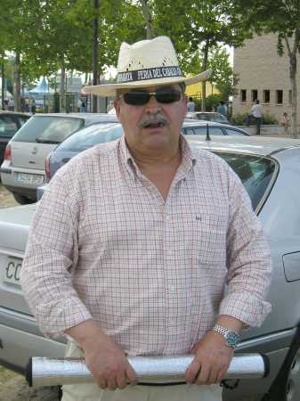

Ya han pasado unos años, ¿eh?, bueno, no tantos ya que, el que tuvo retuvo y aquí está la prueba. ¿Satisfechos Morris, JB y demás...? Perdonadme la licencia del sombrero, pero hacía una caló de justicia, además, así se disimula la falta del don más preciado de cualquier joven, aunque uno todavía... El rollo que llevo en las manos, evidentemente es la alfombrilla para la clase de yoga... Y si pincháis en la foto, me veréis como más actual ¿...?
|

|